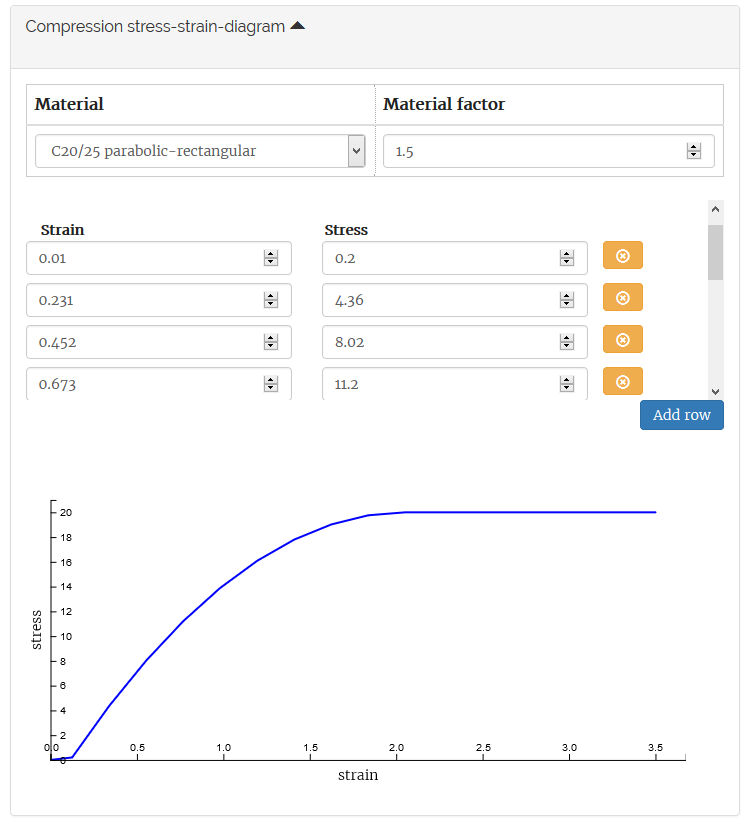
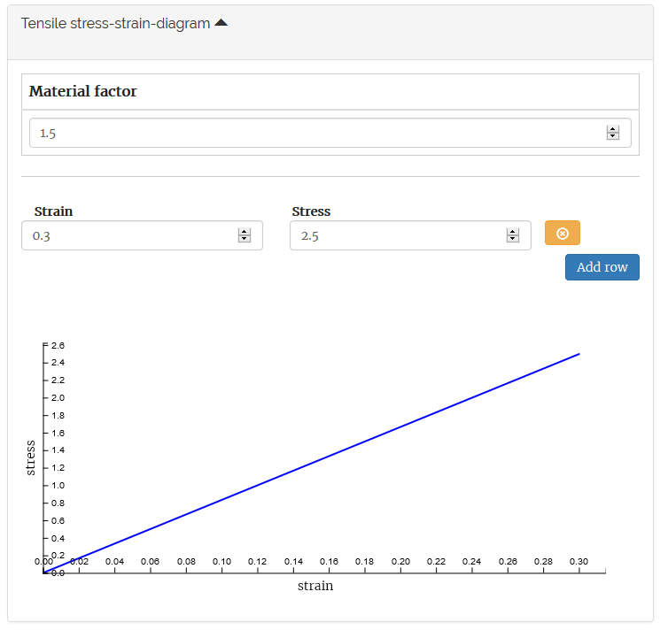
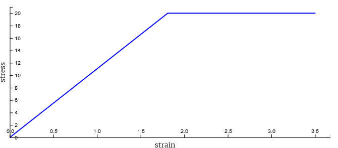
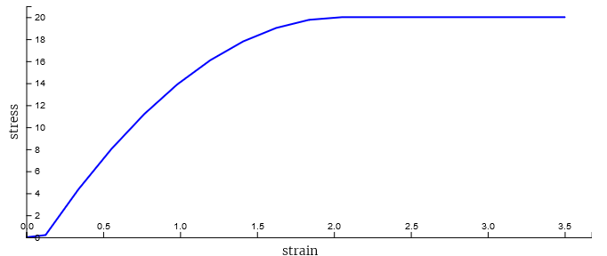

2. Materials¶
The material input describes the behaviour of the cross section by stress strain relationships. There are two material input graphs one graph describes the behaviour under compressive load. The other describes the tensile load.
The standard input units are:
- Stress: MPa
- Strain: promille
Below are both input fields shown.
{kind=link}
Compressive diagram.
{kind=link}
Tensile diagram.
2.1. Preset values¶
The most common concrete materials in ULS state are preset. If you need another you can create your own stress strain diagram by choosing the custom option.
The preset concrete types are available in simple bi-linear diagrams and in parabolic-rectangular diagrams.
 bi-linear |
 parabolic-rectangular |
2.2. Material factor¶
The material factor shown in both input screens has influence on the material strength. The stress values of the diagram are divided by this factor. Note that the strain values remain the same.
The values used for computation for will change as shown in the table below.
Material factor of 1.5:
| Input values | Calculation values | ||
|---|---|---|---|
| strain | stress | strain | stress | ||
| 1.75 | 30 | 1.75 | 20 |
| 3.50 | 30 | 3.50 | 20 |
Material factor of 1:
| Input values | Calculation values | ||
|---|---|---|---|
| strain | stress | strain | stress | ||
| 1.75 | 30 | 1.75 | 30 |
| 3.50 | 30 | 3.50 | 30 |
Material factor of 2:
| Input values | Calculation values | ||
|---|---|---|---|
| strain | stress | strain | stress | ||
| 1.75 | 30 | 1.75 | 10 |
| 3.50 | 30 | 3.50 | 10 |
2.3. Young’s modulus¶
If you want to describe a material by its Young’s Modulus (E) and its maximum stress (σ), you need to compute the corresponding strain:
Note that the input values are in promille so need to be multiplied by 1000.